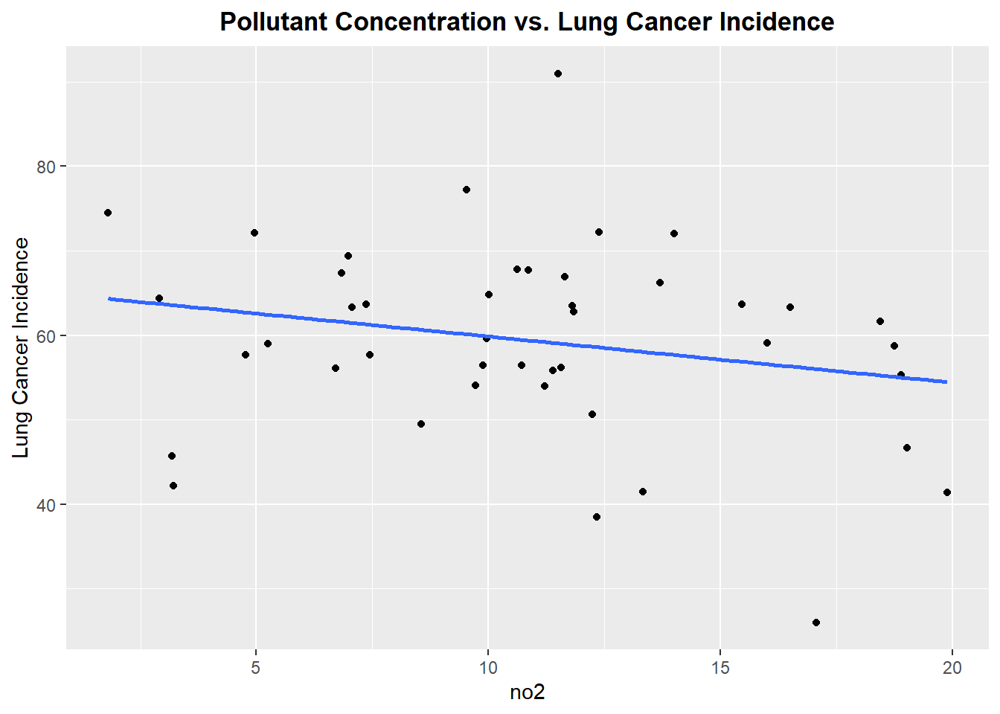
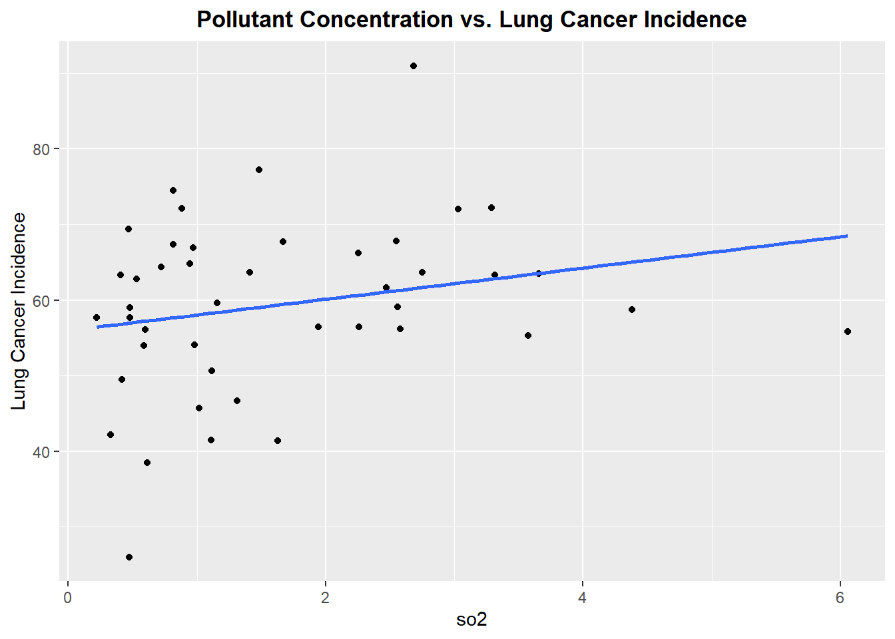
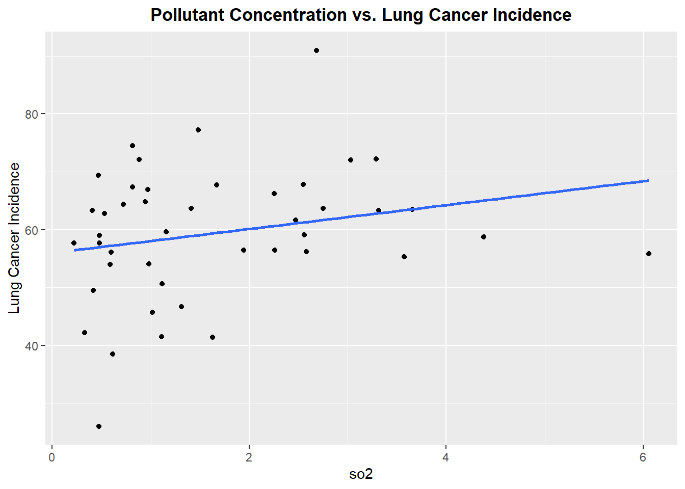
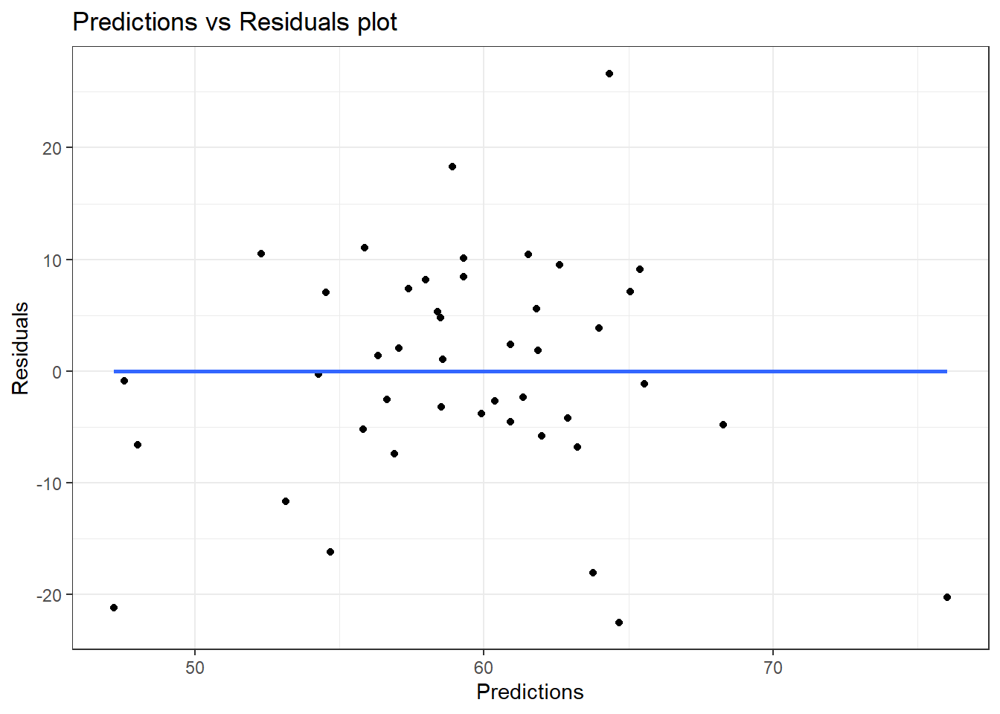
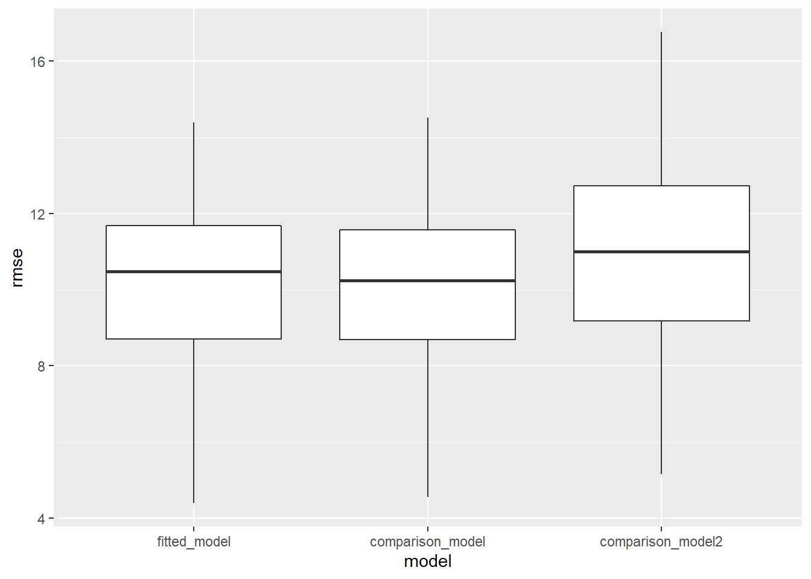

Model Building for Lung Cancer Incidence
Matthew Neky & Anand Rajan
12/8/2021
Importing and Merging Data
inc_state =
read_excel("data/IncRate.xlsx", sheet = "State",
skip = 6) %>%
janitor::clean_names() %>%
separate(
col = breast_both_sexes_combined,
into = c("breast_total", "female_breast_only"),
sep = "-"
) %>%
mutate(
breast_male = if_else(breast_male == "n/a", "0", breast_male),
cervix_male = if_else(cervix_male == "n/a", "0", cervix_male),
colon_excluding_rectum_both_sexes_combined = if_else(colon_excluding_rectum_both_sexes_combined == "n/a", "0", colon_excluding_rectum_both_sexes_combined),
colon_excluding_rectum_female = if_else(colon_excluding_rectum_female == "n/a", "0", colon_excluding_rectum_female),
colon_excluding_rectum_male = if_else(colon_excluding_rectum_male == "n/a", "0", colon_excluding_rectum_male),
) %>%
filter(state != "Puerto Rico") %>%
select(-c("female_breast_only", starts_with("colon"), starts_with("rectum")))pollution_incidence = read_csv("data/uspollution_us_2000_2016.csv") %>%
janitor::clean_names() %>%
select(state, date_local, no2_mean, o3_mean,
so2_mean, co_mean) %>%
separate(date_local, into = c("year", "month", "day"), sep = "\\-") %>%
select(-c("month", "day")) %>%
group_by(year, state) %>%
summarize(across(everything(), mean)) %>%
mutate_if(is.numeric, ~round(., 3)) %>%
filter(state != "Country Of Mexico") %>%
ungroup() %>%
select(state:co_mean) %>%
group_by(state) %>%
summarize(
no2 = mean(no2_mean),
o3 = mean(o3_mean),
so2 = mean(so2_mean),
co = mean(co_mean)
) %>%
merge(inc_state, by = "state") %>%
filter(
state != "Nevada"
) %>%
mutate(
lung_and_bronchus_both_sexes_combined = as.numeric(lung_and_bronchus_both_sexes_combined),
lung_and_bronchus_female = as.numeric(lung_and_bronchus_female),
lung_and_bronchus_male = as.numeric(lung_and_bronchus_male)
)
str(pollution_incidence)## 'data.frame': 44 obs. of 77 variables:
## $ state : chr "Alabama" "Alaska" "Arizona" "Arkansas" ...
## $ no2 : num 10.02 11.39 19.03 9.54 13.33 ...
## $ o3 : num 0.0222 0.012 0.0249 0.0257 0.0261 ...
## $ so2 : num 0.945 6.056 1.313 1.483 1.112 ...
## $ co : num 0.212 0.43 0.493 0.418 0.441 ...
## $ all_cancer_types_combined_both_sexes_combined : chr "451.2" "416.9" "386.3" "472.8" ...
## $ all_cancer_types_combined_female : chr "403.3" "403.2" "370.1" "424.8" ...
## $ all_cancer_types_combined_male : chr "517.6" "437.2" "409.8" "537.2" ...
## $ brain_and_other_nervous_system_both_sexes_combined : chr "6.2" "6.3" "6" "6.8" ...
## $ brain_and_other_nervous_system_female : chr "5.5" "5.6" "4.9" "5.5" ...
## $ brain_and_other_nervous_system_male : chr "7.2" "7" "7" "8.3" ...
## $ breast_total : chr "121.6 " "120.1 " "114.3 " "118.2 " ...
## $ breast_female : chr "121.6" "120.1" "114.3" "118.2" ...
## $ breast_male : chr "0" "0" "0" "0" ...
## $ cervix_both_sexes_combined : chr "9.4" "7.2" "6.5" "9.5" ...
## $ cervix_female : chr "9.4" "7.2" "6.5" "9.5" ...
## $ cervix_male : chr "0" "0" "0" "0" ...
## $ colorectum_both_sexes_combined : chr "43.6" "42.9" "32.5" "44.1" ...
## $ colorectum_female : chr "37.9" "40.7" "28.3" "37.9" ...
## $ colorectum_male : chr "50.4" "45.1" "37.2" "51.2" ...
## $ esophagus_both_sexes_combined : chr "4.5" "5.8" "4.3" "4.4" ...
## $ esophagus_female : chr "1.6" "2.9" "1.7" "1.5" ...
## $ esophagus_male : chr "8.1" "8.8" "7.2" "7.8" ...
## $ hodgkin_lymphoma_both_sexes_combined : chr "2.4" "1.8" "2.2" "2.7" ...
## $ hodgkin_lymphoma_female : chr "2.1" "1.6" "1.9" "2.4" ...
## $ hodgkin_lymphoma_male : chr "2.7" "2" "2.5" "3" ...
## $ kidney_and_renal_pelvis_both_sexes_combined : chr "17.9" "18.2" "15.9" "20.2" ...
## $ kidney_and_renal_pelvis_female : chr "12.8" "13.7" "10.9" "14" ...
## $ kidney_and_renal_pelvis_male : chr "23.9" "22.6" "21.5" "27.4" ...
## $ larynx_both_sexes_combined : chr "4.1" "2.6" "2.1" "4" ...
## $ larynx_female : chr "1.6" "0.9" "0.8" "1.8" ...
## $ larynx_male : chr "7.2" "4.3" "3.7" "6.6" ...
## $ leukemia_both_sexes_combined : chr "12.3" "11.7" "11" "14.5" ...
## $ leukemia_female : chr "9.7" "9.1" "8.7" "11.2" ...
## $ leukemia_male : chr "15.6" "14.2" "13.8" "18.5" ...
## $ liver_and_intrahepatic_bile_duct_both_sexes_combined: chr "7.7" "9.1" "7.9" "7.8" ...
## $ liver_and_intrahepatic_bile_duct_female : chr "4.3" "5.5" "4.4" "4.1" ...
## $ liver_and_intrahepatic_bile_duct_male : chr "11.9" "12.6" "11.9" "12" ...
## $ lung_and_bronchus_both_sexes_combined : num 64.8 55.8 46.7 77.2 41.5 41.4 59.6 66.9 57.7 62.8 ...
## $ lung_and_bronchus_female : num 50 47.6 43 62.7 37.8 39.6 55.8 60.8 50.5 50.6 ...
## $ lung_and_bronchus_male : num 84.1 64.8 51.2 95.8 46.4 44.1 65 75.3 66.5 79 ...
## $ melanoma_of_the_skin_both_sexes_combined : chr "21.6" "14.3" "24.5" "21.7" ...
## $ melanoma_of_the_skin_female : chr "17" "12.3" "17.4" "17" ...
## $ melanoma_of_the_skin_male : chr "28.2" "16.7" "33" "28.3" ...
## $ myeloma_both_sexes_combined : chr "7.1" "4.9" "5.1" "6.8" ...
## $ myeloma_female : chr "6.1" "4" "4" "5.7" ...
## $ myeloma_male : chr "8.5" "5.8" "6.3" "8.3" ...
## $ non_hodgkin_lymphoma_both_sexes_combined : chr "16.2" "17.1" "15.5" "18.2" ...
## $ non_hodgkin_lymphoma_female : chr "13.4" "13.5" "12.9" "15.2" ...
## $ non_hodgkin_lymphoma_male : chr "19.8" "21" "18.5" "22" ...
## $ oral_cavity_and_pharynx_both_sexes_combined : chr "13.2" "10.7" "9.2" "13.8" ...
## $ oral_cavity_and_pharynx_female : chr "7.1" "5.9" "4.8" "7.3" ...
## $ oral_cavity_and_pharynx_male : chr "20.3" "15" "14.1" "21.1" ...
## $ ovary_both_sexes_combined : chr "11.5" "9.9" "10.5" "11.2" ...
## $ ovary_female : chr "11.5" "9.9" "10.5" "11.2" ...
## $ ovary_male : chr "n/a" "n/a" "n/a" "n/a" ...
## $ pancreas_both_sexes_combined : chr "12.7" "12.7" "11.6" "12.7" ...
## $ pancreas_female : chr "11" "11.5" "10.1" "10.8" ...
## $ pancreas_male : chr "14.8" "13.9" "13.4" "14.8" ...
## $ prostate_both_sexes_combined : chr "121" "83.4" "79.1" "112.4" ...
## $ prostate_female : chr "n/a" "n/a" "n/a" "n/a" ...
## $ prostate_male : chr "121" "83.4" "79.1" "112.4" ...
## $ stomach_both_sexes_combined : chr "6.8" "8" "5.3" "6.3" ...
## $ stomach_female : chr "5.1" "5.3" "3.8" "4.3" ...
## $ stomach_male : chr "8.8" "10.8" "7.1" "8.8" ...
## $ testis_both_sexes_combined : chr "4.3" "6" "5.3" "5.3" ...
## $ testis_female : chr "n/a" "n/a" "n/a" "n/a" ...
## $ testis_male : chr "4.3" "6" "5.3" "5.3" ...
## $ thyroid_both_sexes_combined : chr "9.7" "12.4" "13.8" "12" ...
## $ thyroid_female : chr "14.1" "19.2" "20.9" "17.6" ...
## $ thyroid_male : chr "5" "6.3" "6.6" "6.3" ...
## $ urinary_bladder_both_sexes_combined : chr "18.3" "21" "18.6" "19.9" ...
## $ urinary_bladder_female : chr "7.5" "8.8" "7.6" "8" ...
## $ urinary_bladder_male : chr "32.7" "34.4" "31.6" "35.1" ...
## $ uterine_corpus_both_sexes_combined : chr "19.9" "24.2" "22.9" "24.1" ...
## $ uterine_corpus_female : chr "19.9" "24.2" "22.9" "24.1" ...
## $ uterine_corpus_male : chr "n/a" "n/a" "n/a" "n/a" ...Linear Models
model1 = lm(all_cancer_types_combined_both_sexes_combined ~ no2 + o3 + so2 + co, data = pollution_incidence)
model1 %>% broom::glance()## # A tibble: 1 x 12
## r.squared adj.r.squared sigma statistic p.value df logLik AIC BIC
## <dbl> <dbl> <dbl> <dbl> <dbl> <dbl> <dbl> <dbl> <dbl>
## 1 0.131 0.0423 30.4 1.47 0.228 4 -210. 432. 443.
## # ... with 3 more variables: deviance <dbl>, df.residual <int>, nobs <int>model2 = lm(lung_and_bronchus_both_sexes_combined ~ no2 + o3 + so2 + co, data = pollution_incidence)
model2 %>% broom::glance()## # A tibble: 1 x 12
## r.squared adj.r.squared sigma statistic p.value df logLik AIC BIC
## <dbl> <dbl> <dbl> <dbl> <dbl> <dbl> <dbl> <dbl> <dbl>
## 1 0.221 0.141 10.7 2.77 0.0407 4 -164. 340. 351.
## # ... with 3 more variables: deviance <dbl>, df.residual <int>, nobs <int>model3 = lm(colorectum_both_sexes_combined ~ no2 + o3 + so2 + co, data = pollution_incidence)
model3 %>% broom::glance()## # A tibble: 1 x 12
## r.squared adj.r.squared sigma statistic p.value df logLik AIC BIC
## <dbl> <dbl> <dbl> <dbl> <dbl> <dbl> <dbl> <dbl> <dbl>
## 1 0.305 0.233 3.52 4.27 0.00581 4 -115. 242. 253.
## # ... with 3 more variables: deviance <dbl>, df.residual <int>, nobs <int>Building a Model for Lung Incidence
Lets begin by exploring each pollutant to see if there exists linear relationship between the pollutant concentration and incidence of lung cancer
continuous_variables =
pollution_incidence %>%
select(is.numeric) %>%
select(-lung_and_bronchus_both_sexes_combined,-lung_and_bronchus_female, -lung_and_bronchus_male) %>%
colnames() %>%
as.vector()continuous_variables =
continuous_variables %>%
as.list()
for (i in continuous_variables) {
plot =
ggplot(pollution_incidence, aes_string(i, "lung_and_bronchus_both_sexes_combined")) +
geom_point() +
geom_smooth(method = lm, se = FALSE) +
labs(title = "Pollutant Concentration vs. Lung Cancer Incidence", y = "Lung Cancer Incidence") +
theme(plot.title = element_text(hjust = 0.5, face = "bold"))
print(plot)
} 

From reviewing the scatter plots, none of the pollutants show a particularly strong linear relationship with incidence of lung cancer,however we will proceed forward with a model that includes all the pollutants.
fitted_model = lm(lung_and_bronchus_both_sexes_combined ~ no2 + o3 + so2 + co, data = pollution_incidence)
fitted_model %>%
broom::glance()## # A tibble: 1 x 12
## r.squared adj.r.squared sigma statistic p.value df logLik AIC BIC
## <dbl> <dbl> <dbl> <dbl> <dbl> <dbl> <dbl> <dbl> <dbl>
## 1 0.221 0.141 10.7 2.77 0.0407 4 -164. 340. 351.
## # ... with 3 more variables: deviance <dbl>, df.residual <int>, nobs <int>fitted_model %>%
broom::tidy() %>%
select(term, estimate,p.value) %>%
knitr::kable(digits=3)| term | estimate | p.value |
|---|---|---|
| (Intercept) | 62.537 | 0.000 |
| no2 | -1.034 | 0.034 |
| o3 | 126.200 | 0.768 |
| so2 | 4.561 | 0.006 |
| co | -9.008 | 0.651 |
As we see the p-values for each of the slopes are significant except the slope for Carbon Monoxide. Moreover, the p-value for the overall model is significant(p-value=0.0126). Thus we will continue with the current model and compared to other comparison models
pollution_incidence %>%
add_residuals(fitted_model) %>%
add_predictions(model2) %>%
ggplot(aes(x=pred, y=resid)) +
geom_point() +
geom_smooth(method = "lm", se = FALSE) +
labs(
title= "Predictions vs Residuals plot",
x="Predictions",
y="Residuals"
) +
scale_color_viridis(discrete=TRUE) +
theme_bw() From the plot we see the assumption of homescedasticity is not violated, thus we can proceed forward with this model.
Comparison Models
comparison_model = lm(lung_and_bronchus_both_sexes_combined ~ no2 + o3 + so2, data = pollution_incidence)
comparison_model2 = lm(lung_and_bronchus_both_sexes_combined ~ o3 + so2, data = pollution_incidence) %>%
broom::tidy()#Cross Validate
cv_df = crossv_mc(pollution_incidence,100)
cv_df =
cv_df %>%
mutate(
train=map(train,as_tibble),
test=map(test,as_tibble)
)cv_df =
cv_df %>%
mutate(
fitted_model = map(train, ~lm(lung_and_bronchus_both_sexes_combined ~ no2 + o3 + so2 + co, data = pollution_incidence)),
comparison_model = map(train, ~lm(lung_and_bronchus_both_sexes_combined ~ no2 + o3 + so2, data = pollution_incidence)),
comparison_model2 = map(train, ~lm(lung_and_bronchus_both_sexes_combined ~ o3 + so2, data = pollution_incidence))) %>%
mutate(
rmse_fitted_model = map2_dbl(fitted_model, test,~rmse(model=.x, data=.y)),
rmse_comparison_model = map2_dbl(comparison_model, test, ~rmse(model=.x, data=.y)),
rmse_comparison_model2 = map2_dbl(comparison_model2, test, ~rmse(model=.x, data=.y))
)
cv_df %>%
select(starts_with("rmse")) %>%
pivot_longer(
everything(),
names_to = "model",
values_to = "rmse",
names_prefix = "rmse_") %>%
mutate(model = fct_inorder(model)) %>%
ggplot(aes(x = model, y = rmse)) + geom_boxplot()
female_model = lm(lung_and_bronchus_female ~ no2 + o3 + so2 + co, data=pollution_incidence)
female_model %>%
broom::glance()## # A tibble: 1 x 12
## r.squared adj.r.squared sigma statistic p.value df logLik AIC BIC
## <dbl> <dbl> <dbl> <dbl> <dbl> <dbl> <dbl> <dbl> <dbl>
## 1 0.195 0.112 9.13 2.36 0.0703 4 -157. 326. 337.
## # ... with 3 more variables: deviance <dbl>, df.residual <int>, nobs <int>model_male = lm(lung_and_bronchus_male ~ no2 + o3 + so2 + co, data=pollution_incidence)
model_male %>%
broom::glance()## # A tibble: 1 x 12
## r.squared adj.r.squared sigma statistic p.value df logLik AIC BIC
## <dbl> <dbl> <dbl> <dbl> <dbl> <dbl> <dbl> <dbl> <dbl>
## 1 0.218 0.138 14.0 2.72 0.0433 4 -176. 364. 374.
## # ... with 3 more variables: deviance <dbl>, df.residual <int>, nobs <int>